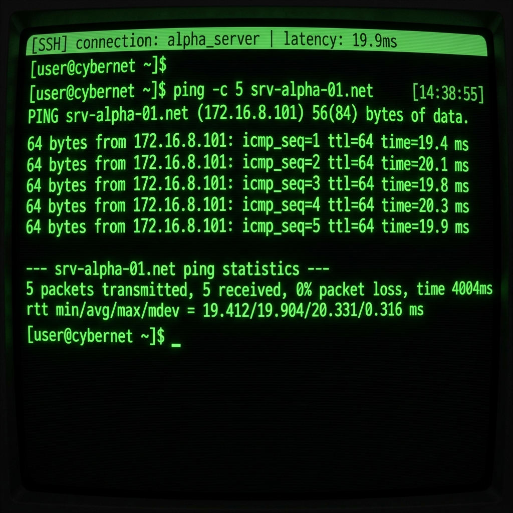
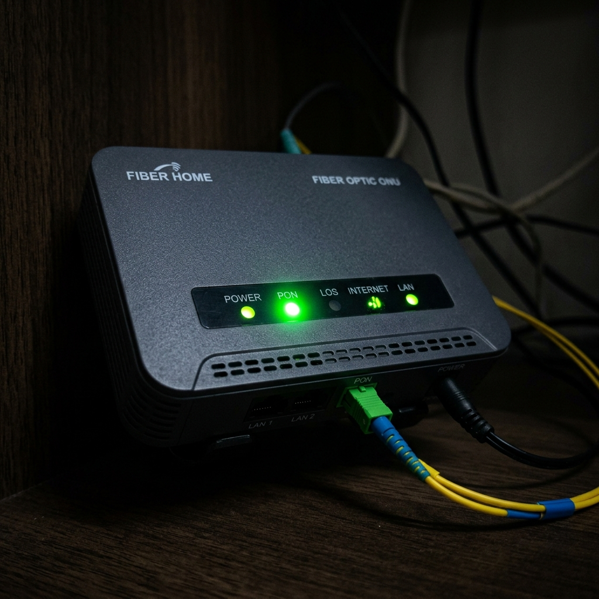
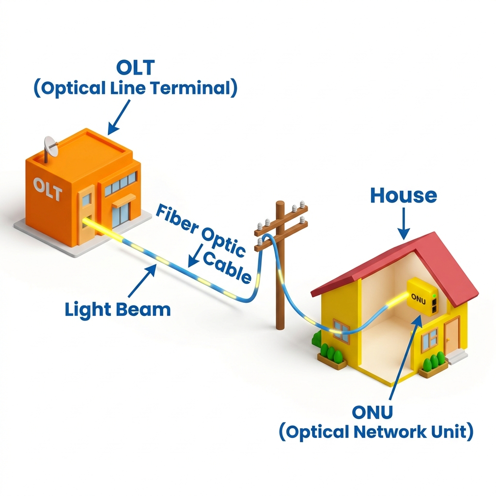
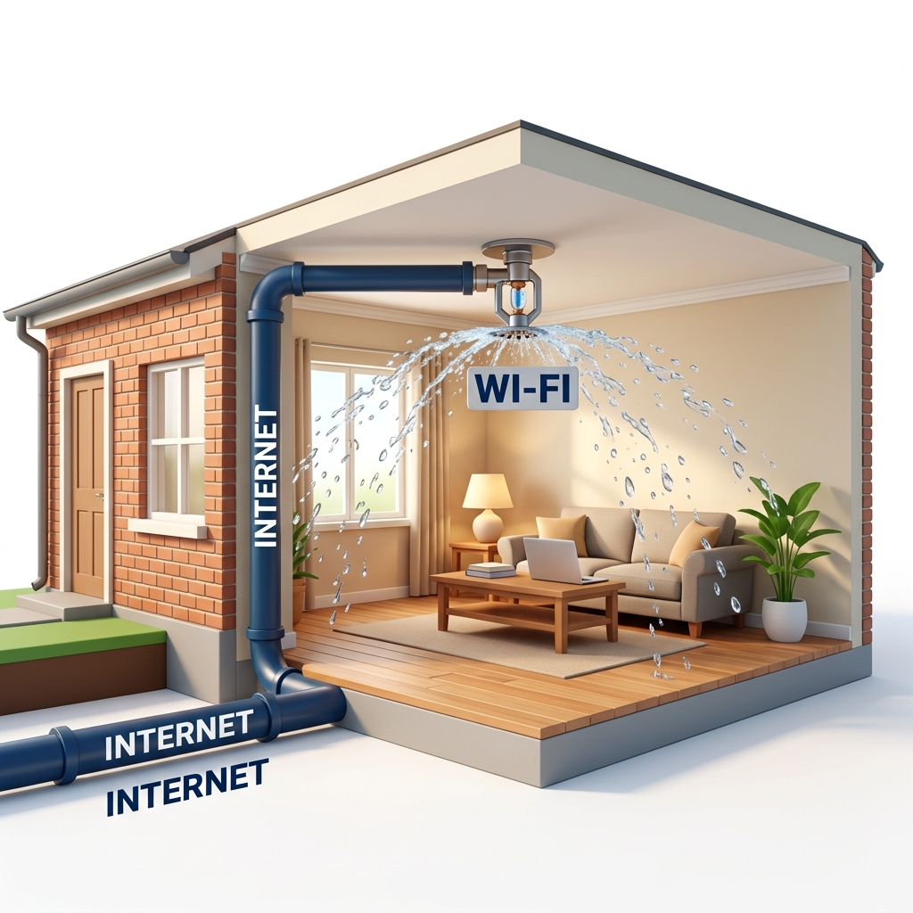
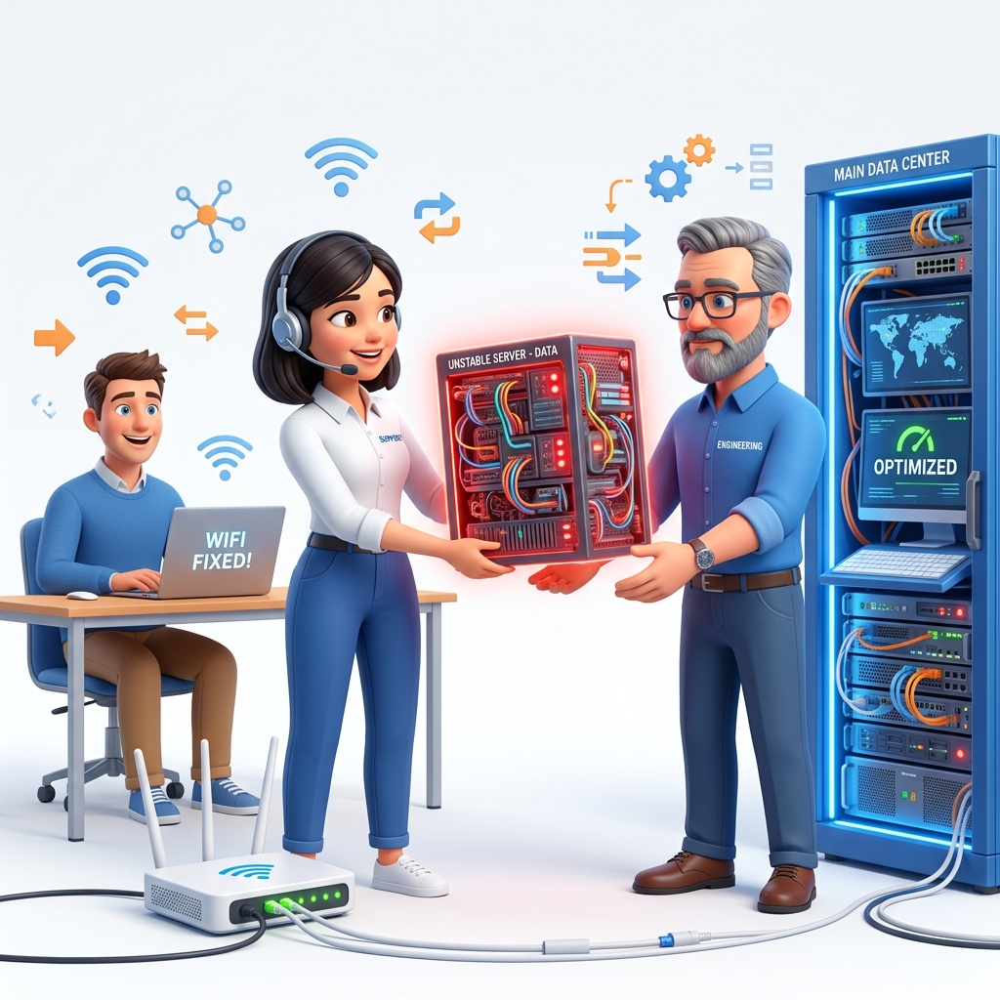

Bem-vindo ao Treinamento
Formação de Suporte de Elite
Domine os conceitos fundamentais de redes de computadores, internet, cabeamento óptico, roteamento Wi-Fi e monitoramento NOC. Saia do zero e torne-se um técnico cirúrgico capaz de encantar clientes e resolver problemas com facilidade!
Princípio Central da Rede
Redes são comunicação entre dispositivos que trocam informações de forma organizada para que os dados cheguem ao seu destino final com máxima qualidade.
Nossa Missão Diária
Garantir que as informações viajem de forma rápida, segura e estável, conectando pessoas e criando oportunidades únicas todos os dias.
Diretrizes Metodológicas
Lembre-se sempre:
Tudo o que a sociedade moderna faz hoje depende diretamente de redes. O seu trabalho e dedicação fazem a informação chegar onde ela é necessária com a melhor qualidade técnica!
Mapa de Rede Interativo MundoNet
Clique para dar ZoomA internet é uma autoestrada viva. Abaixo, representamos a conexão real desde o link de trânsito até os aparelhos em casa. **Clique em qualquer equipamento** para dar um super ZOOM e ver o raio-x dele!
01 O que é uma Rede?
FundamentosModelo OSI Interativo (7 Camadas)
Simulador de Envio de Pacotes
A Linguagem das Redes
Uma Rede nada mais é do que um conjunto de dispositivos (computadores, celulares, TVs, videogames) conectados entre si conversando na mesma língua.
A Internet é simplesmente uma gigantesca rede global formada por várias pequenas redes locais interligadas ao redor do mundo.
Os dados não viajam em blocos inteiros. Eles são quebrados em pedaços minúsculos chamados de "Pacotes". Todo esse processo funciona sob a regra básica de Envio e Recebimento.
Quando você envia um áudio no WhatsApp, assiste a um vídeo no YouTube ou joga uma partida online, o seu aparelho está enviando pacotes digitais para um servidor remoto e recebendo respostas instantâneas em frações de segundos.
02 Como Funciona a Internet?
FundamentosRastreamento da Jornada de Dados
1. O Cliente (O Pedido)
Você está no seu celular e digita 'youtube.com'. O celular é o CLIENTE. Ele cria uma requisição (um pedido) perguntando ao site do YouTube pelo vídeo. Ele envia essa requisição pelo ar até o roteador Wi-Fi.
A Relação Cliente e Servidor
Toda a navegação na internet se baseia no modelo de Cliente e Servidor:
- Cliente: O seu dispositivo (celular, PC) que faz o pedido.
- Servidor: Computadores superpotentes que ficam ligados 24 horas por dia em datacenters, armazenando sites e enviando os dados pedidos.
O Caminho dos Dados: Quando você abre um site, o pacote viaja do seu dispositivo para o Provedor local (MundoNet), que o direciona para os Backbones (Autoestradas principais) e finalmente chega ao Servidor do site.
Download é o ato de baixar informações do servidor para o seu celular (assistir a uma aula, ler notícias). Upload é o oposto: enviar dados do seu celular para a internet (enviar uma foto, fazer backup).
03 Conceitos Básicos de Rede
Fundamentos
A Sopa de Letrinhas Descomplicada
Para que os computadores se comuniquem corretamente, eles usam quatro regras fundamentais de identidade:
- IP (Endereço IP): O endereço ou 'RG' de cada aparelho conectado. É único para que os pacotes saibam exatamente para onde ir.
- Público: Endereço visível em toda a internet mundial.
- Privado: Endereço local dentro da sua casa (ex: 192.168.1.1).
- IPv4 vs IPv6: O IPv4 é o padrão clássico limitado (esgotado). O IPv6 é a versão moderna ilimitada.
- DNS: Funciona como a agenda telefônica da internet. Ele traduz nomes de sites (como google.com) nos IPs numéricos que a máquina entende.
- Gateway: A porta de saída da sua rede local (normalmente o roteador). É por onde todos os pacotes devem passar para acessar a rua.
- Máscara de Rede: Define os limites e a divisão entre a rede local e a internet externa.
04 Equipamentos de Rede
Fundamentos
Catálogo Interativo de Hardware
Modem / ONT
Dispositivo primário que decodifica o sinal de luz do cabo de fibra óptica ou ondas de rádio em pulsos digitais elétricos de rede local.
Quem é Quem na Casa do Cliente?
Para fazer a internet funcionar, usamos uma série de aparelhos específicos, cada um com sua função cirúrgica:
- Modem: Converte o sinal físico externo (fibra, rádio) para formato digital.
- Roteador: Recebe o sinal do modem, faz a autenticação e o distribui na residência.
- Switch: Conecta múltiplos aparelhos via cabo de rede na mesma rede local.
- Access Point (AP): Expande a cobertura do sinal Wi-Fi sem perdas de desempenho.
- ONU / OLT: Equipamentos de fibra óptica. A ONU fica na casa do cliente recebendo o cabo e a OLT fica na central da MundoNet controlando tudo.
05 Cabeamento & Fibra Óptica
Infraestrutura
Simulador de Sinais Ópticos (dBm)
A Autoestrada da Luz
Existem dois tipos principais de fios no nosso suporte diário:
- Cabo de Rede UTP (CAT5e / CAT6): Utiliza cobre e eletricidade. É o cabo tradicional azul ou amarelo com conector RJ45 que liga seu notebook ao roteador. Rápido e imune a paredes.
- Fibra Óptica: Utiliza vidro flexível e pulsos de luz (lasers). Suporta distâncias enormes e velocidades absurdas sem sofrer interferência.
Potência Óptica (RX / TX): Medida na escala negativa de dBm. O sinal ideal na casa do cliente fica entre -15 e -25 dBm. Se ultrapassar -28 dBm, a ONU começa a sofrer quedas e lentidão extrema devido a atenuação (sinal atenuado por conector sujo ou dobra no cabo).
Prática Recomendada
Sempre confira as fusões de caixas externas (CTO e splitters) se múltiplos clientes na mesma rua reclamarem de quedas e sinal atenuado simultaneamente!
06 Dominando a Tecnologia Wi-Fi
Infraestrutura
Testador de Frequências Wi-Fi (2.4Ghz vs 5Ghz)
A Grande Confusão no Atendimento
Grave essa regra na sua mente: Muitas vezes o problema não é a internet, é o Wi-Fi!
Os roteadores modernos emitem o sinal através de duas 'cordinhas invisíveis' que funcionam de formas opostas:
- 2.4GHz: É como o som grave (grosso) de um alto-falante. Ele viaja longe e atravessa barreiras como paredes e espelhos. No entanto, é lento e sofre muita interferência de redes vizinhas.
- 5GHz (WPA2 / WPA3): É como o som agudo (fino). Permite velocidades altíssimas perfeitas para streaming e downloads robustos. No entanto, suas ondas são curtas e não conseguem passar por obstáculos. Se fechar a porta do quarto, o sinal cai drasticamente.
A internet da MundoNet é como a água limpa chegando encanada na rua até a torneira da casa do cliente. O roteador Wi-Fi é o regador do jardim que espalha essa água pelo ar. Se o cliente estiver muito longe no quintal e a água não respingar nele, a culpa não é da água da rua!
07 Diagnóstico de Rede
Triagem & NOCComo Investigar Problemas Lógicos
Quando um cliente relata 'joguinho travando' ou 'internet oscilando', nós temos que usar ferramentas lógicas para descobrir a origem exata do problema:
- Ping: Testa o tempo de atraso ou resposta da internet. Medido em milissegundos (ms).
- Excelente: < 20ms
- Bom: 20ms a 50ms
- Lento: > 100ms (Jogos travam/lag)
- Tracert (Trace Route): Rastreia todo o percurso físico feito pelos pacotes através dos postes, centrais e autoestradas mundiais até o servidor final. Útil para descobrir gargalos de rota.
- Jitter: Mede a variação ou a irregularidade do Ping. Se o Ping pula repentinamente de 15ms para 300ms, o Jitter é alto e causará travamentos.
- Perda de Pacotes: Ocorre quando pedaços de dados se perdem no caminho físico. Um sinal grave de cabo de fibra atenuado.
08 Atendimento Técnico & Triagem
Triagem & NOC
Simulador de Árvore de Decisão do Suporte
Passo 1: Qual o status das luzes no aparelho?
Passo 2: O que o sistema IXC/Contrato acusa?
A Arte da Investigação no Atendimento
Quando o cliente liga ou entra em contato no WhatsApp, você deve agir como um verdadeiro detetive técnico:
- Coleta Eficiente: Peça os dados básicos (Nome, CPF) e busque-o rapidamente no sistema.
- Perguntas Inteligentes: Evite termos complexos e foque nas analogias e perguntas diretas:
- "As luzes na frente do aparelho estão acesas?"
- "Tem alguma luzinha vermelha piscando?" (Verificação física)
- "A lentidão afeta todos os aparelhos ou só a TV de longe?"
Mapeamento do Problema: Identifique cirurgicamente se a falha é no Wi-Fi do cliente, no cabo drop (físico externo), na rota do provedor ou uma pendência de faturamento (bloqueio por inadimplência).
09 Introdução ao Provedor & NOC
Triagem & NOCSimulador de Monitoramento NOC Live
Alarmes Ativos
A Retaguarda do Provedor
Como a internet chega ao provedor MundoNet e é monitorada?
- Links de Trânsito IP & IX (Internet Exchange): A MundoNet compra conexões massivas das gigantes globais (Trânsito) e se conecta a pontos de troca de tráfego locais (IX.br) para acessar os servidores do Facebook, Netflix e Google de forma super rápida e barata.
- CGNAT: Tecnologia que compartilha um único IP público mundial para dezenas de conexões de clientes domésticos, economizando endereços IPv4 escassos.
- NOC (Centro de Operações de Rede): Nossa sala de controle. Através de sistemas como Zabbix, PRTG, Grafana e Smokeping, a equipe acompanha latências, oscilações no tráfego, alarmes de queda de OLTs e falhas elétricas em postes e repetidores em tempo real.
Provinha Final MundoNet Academy
Você concluiu toda a jornada teórica de redes! Chegou a hora de provar seus conhecimentos práticos. Responda a 10 perguntas rápidas com base nas analogias e conceitos explicados nos módulos.
Atingindo pontuação igual ou superior a 80% (8 acertos), você receberá seu Certificado Oficial de Conclusão!